3-17-sed精讲
请注意，sed和awk都使用单引号去练习，双引号会加载特殊符号，要做更多的转义。
sed是什么
sed是Stream Editor（字符流编辑器）的缩写，简称流编辑器。
文件数据就像流水线一样被加工处理，sed就是一个加工厂，文件中的每一行，每一个字符都是原料；
经过sed处理后，最终从流水线出来，产生结果。
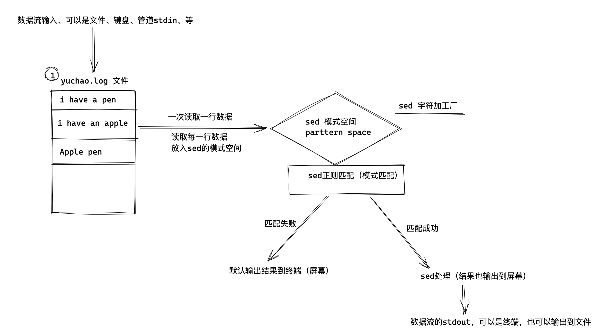
sed常用于和正则表达式结合，实现对文件内容增删改查，最常用的功能是
- 过滤指定字符信息
- 取出指定的字符行
- 修改文件内容
sed版本与功能
sed 命令是操作,过滤和转换文本内容的强大工具
常用功能有增删改查(增加,删除,修改,查询
其中查询的功能最常用的
另外两大功能
- 过滤(过滤指定字符串)
- 取行(去除指定行).
当前于超老师使用的版本是GNU版本linux开源的sed工具
当前机器环境
[yuchao-linux01 root ~]$cat /etc/os-release
NAME="CentOS Linux"
VERSION="7 (Core)"
ID="centos"
ID_LIKE="rhel fedora"
VERSION_ID="7"
PRETTY_NAME="CentOS Linux 7 (Core)"
ANSI_COLOR="0;31"
CPE_NAME="cpe:/o:centos:centos:7"
HOME_URL="https://www.centos.org/"
BUG_REPORT_URL="https://bugs.centos.org/"
CENTOS_MANTISBT_PROJECT="CentOS-7"
CENTOS_MANTISBT_PROJECT_VERSION="7"
REDHAT_SUPPORT_PRODUCT="centos"
REDHAT_SUPPORT_PRODUCT_VERSION="7"
sed版本
[yuchao-linux01 root ~]$sed --version
sed (GNU sed) 4.2.2
Copyright (C) 2012 Free Software Foundation, Inc.
License GPLv3+: GNU GPL version 3 or later <http://gnu.org/licenses/gpl.html>.
This is free software: you are free to change and redistribute it.
There is NO WARRANTY, to the extent permitted by law.
Written by Jay Fenlason, Tom Lord, Ken Pizzini,
and Paolo Bonzini.
GNU sed home page: <http://www.gnu.org/software/sed/>.
General help using GNU software: <http://www.gnu.org/gethelp/>.
E-mail bug reports to: <bug-sed@gnu.org>.
Be sure to include the word ``sed'' somewhere in the ``Subject:'' field.
sed语法格式
sed [选项] [sed内置命令字符] [输入文件]
说明:
1.注意 sed 软件及后面选项,sed 命令和输入文件,每个元素之间都至少有一个空格
2.为了避免混淆,文本称呼sed为sed软件.sed-commands(sed命令)是sed软件内置的一些命令选项,为了和前面的 options(选项)区分,故称为sed命令.
3.sed-commands 既可以是单个sed 命令,也可以是多个sed命令组合.
4.input-file(输入文件)是可选项,sed 还能够从标准输入或管道获取输入
sed命令执行过程
概括流程:
sed 软件从文件或管道读取一行,处理一行,输出一行;再读取一行.再处理一行.在输出一行....
小提示：
一次一行的设计是的 sed 软件性能很高,sed 在读取非常庞大的文件是不会出现卡顿现象.大家 都用过 vi 命令,用 vi 命令打开几十 M 或更大的文件,会发现有卡顿现象,这是因为 vi 命令打开文件是一 次性将文件加载到内容,然后再打开.因此卡短时间长短就取决于磁盘到内存的读取速度了.而且如果文件过大的话还会造成内存溢出现象.
sed 软件就很好的避免了这种情况,打开速度非常快,执行速度也很快.
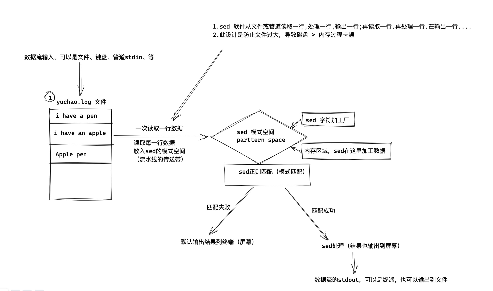
文字描述
sed 处理 文件 chaoge.txt
1.判断第一行是否要处理，不是就重新读取下一行；是则继续处理，流水线向后走；
2.数据放到了模式空间（内存），执行sed命令，如a追加、i插入、s替换
3.将模式空间内加工过的数据，输出到终端上，然后清空模式空间的内容；
4.继续处理下一行文本，重复上述流程，直到文件读取结束；
图解sed使用方式
[yuchao-linux01 root ~]$sed '2a 超哥牛啊牛啊' chaoge.txt
I am teacher yuchao.
I teach linux,python.
超哥牛啊牛啊
testtttsss000123566666
I like video,games,girls
#I like girls.
$my blog is http://www.yuchaoit.cn
#my site is https://www.cnblogs.com/pyyu
My qq num is 877348180.
my phone num is 15210888008.
图解
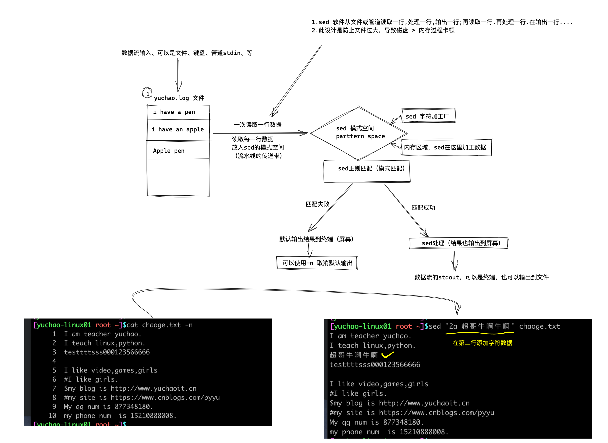
图解sed工作流
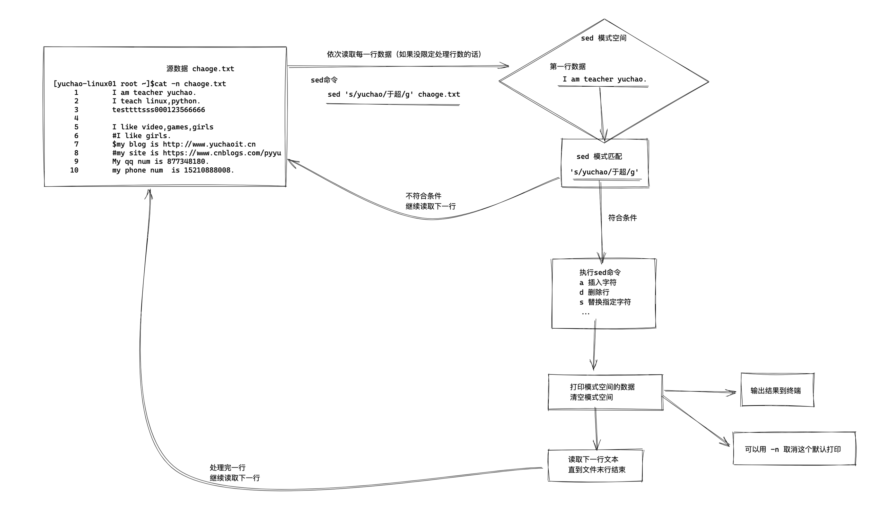
sed 的加工厂
sed软件有两个默认内置加工空间。
模式空间（parttern space）
是 sed 软件从文件读取一行文本然后存入的缓冲区(这个缓冲区是在内存中的),
然后使用 sed 命令操作模式空间的数据。
sed我们已知有一块模式空间（pattern space）用于sed编辑器执行命令的时候，保存待检查的文本。
保持空间（hold space）（进阶篇）
sed之所以能以行为单位的编辑或修改文本，其原因在于它使用了两个空间：一个是活动的“模式空间（pattern space）”，另一个是起辅助作用的“保持空间（hold space）这2个空间的使用。
模式空间：可以想成工程里面的流水线，数据之间在它上面进行处理。
保持空间：可以想象成仓库，我们在进行数据处理的时候，作为数据的暂存区域。
正常情况下，如果不显示使用某些高级命令，保持空间不会使用到！
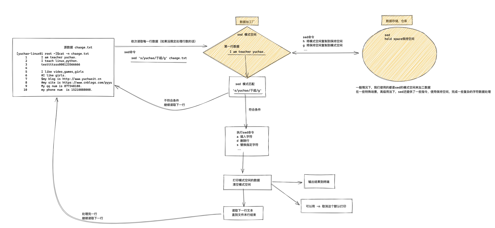
sed软件的参数
options[选项]
解释说明
-n 取消默认的 sed 软件的输出,常与 sed 命令的 p 连用
-e 一行命令语句可以执行多条 sed 命令
-f 选项后面可以接 sed 脚本的文件名
-r 使用正则拓展表达式,默认情况 sed 只识别基本正则表达式
-i 直接修改文件内容,而不是输出终端,如果不使用-i 选项 sed 软件只是修改在 内存中的数据,并不影响磁盘上的文件
sed软件的命令
sed-commands[sed 命令]
解释说明
a 追加,在指定行后添加一行或多行文本
c 取代指定的行
d 删除指定的行
D 删除模式空间的部分内容,直到遇到换行符\n 结束操作,与多行模式相关
i 插入,在指定的行前添加一行或多行文本
h 把模式空间的内容复制到保持空间
H 把模式空间的内容追加到保持空间
g 把保持空间的内容复制到模式空间
G 把保持空间的内容追加到模式空间
x 交换模式空间和保持空间的内容
l 打印不可见的字符
n 清空模式空间,并读取下一行数据并追加到模式空间
N 不清空模式空间,并读取下一行数据并追加到模式空间
p 打印模式空间的内容,通常 p 会与选项-n 一起使用
P(大写) 打印模式空间的内容,直到遇到换行符\你结束操作
q 退出 sed
r 从指定文件读取数据
s 取代,s#old#new#g==>这里 g 是 s 命令的替代标志,注意和 g 命令区分
w 另存,把模式空间的内容保存到文件中
y 根据对应位置转换字符
:label 定义一个标签
t 如果前面的命令执行成功,那么就跳转到 t 指定的标签处,继续往下执行后 续命令,否则,仍然继续正常的执行流程
sed匹配文本范围
sed匹配文本范围
| 范围 | 解释 |
|---|---|
| 空地址 | 全文处理 |
| 单地址 | 指定文件某一行 |
/pattern/ |
被模式匹配到的每一行 |
| 范围区间 | 10,20 十到二十行，10,+5第10行向下5行，/pattern1/,/pattern2/ |
| 步长 | 1~2，表示1、3、5、7、9行，2~2两个步长，表示2、4、6、8、10、偶数行 |
sed软件实践
准备测试数据
[yuchao-linux01 root ~]$cat chaoge.txt -n
1 My name is yuchao.
2 I teach linux.
3 I like play computer game.
4 My qq is 877348180.
5 My website is http://www.yuchaoit.cn
Sed 默认不修改源文件
sed默认的命令操作，不会修改源文件，你看到的终端结果，只是sed把模式空间的内容打印给你看了而已。
得用sed -i 参数修改源数据。
sed增删改查
增，表示在指定行与行之间，添加新字符数据
我们也可以用vi、vim去在某一行，增加数据，但是这种交互式操作，没法进行脚本化
因此sed来了！
sed增加字符命令
"a":追加文本到指定行,记忆方法:a 的全拼是 apend,,意思是追加
"i":插入文本到指定行前,记忆方法:i 的全拼是 insert,意思是插入
单行增加命令
sed增加数据的命令
a 追加,在指定行后添加一行或多行文本
i 插入,在指定的行前添加一行或多行文本
实践
在文件第二行后添加数据
[yuchao-linux01 root ~]$sed '2a 超哥牛啊牛啊' chaoge.txt
My name is yuchao.
I teach linux.
超哥牛啊牛啊
I like play computer game.
My qq is 877348180.
My website is http://www.yuchaoit.cn
在第二行前，插入数据
[yuchao-linux01 root ~]$sed '2i 超哥牛啊牛啊' chaoge.txt
My name is yuchao.
超哥牛啊牛啊
I teach linux.
I like play computer game.
My qq is 877348180.
My website is http://www.yuchaoit.cn
语法总结
sed '行号a 字符数据' 源文件
如
sed '3a I am super man '
sed会在第三行下面，添加你 写入的字符数据
单引号、双引号、无引号、反引号
单引号
所见即所得、单引号内的内容会原样输出
当结合sed、egrep、awk命令，能识别单引号中的正则表达式符号。
echo 'hello, i am teacher yuchao.'
双引号
双引号也是输出引号内的字符串；
双引号会把变量、命令等先解析出结果，然后再输出最终内容；
[root@client-242 ~]# echo "hello, i am teacher ${name}"
hello, i am teacher chaoge
[root@client-242 ~]# echo "now datetime is `date "+%F %T"`"
now datetime is 2022-04-08 15:43:31
[root@client-242 ~]# echo "now datetime is $(date "+%F %T")"
now datetime is 2022-04-08 15:44:01
无引号
不使用引号、linux会以空格来识别为多个参数，不会当做一个整体操作，如果内容里有变量、命令等，优先解析变量、命令，最终输出结果。
[root@client-242 ~]# echo now datetime is `date '+%F %T'`
now datetime is 2022-04-08 15:55:23
不建议用无引号
如果你的字符串中，就包括了空格等特殊字符，无引号就会有问题，建议添加上双引号。
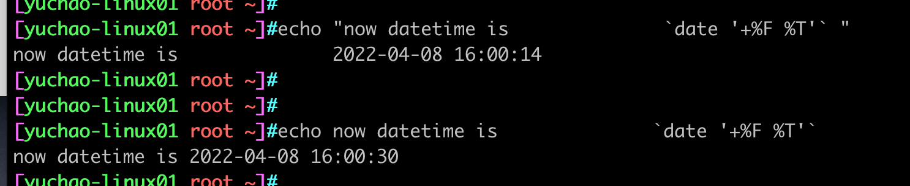
反引号
`command`
反引号内需要写入linux命令，会优先被执行，然后输出结果
经验总结
1.引号里有变量、或者带有反引号的命令，你想它能解析就用双引号；希望原样输出就单引号；
sed多行增加
cat实现多行文本追加
测试数据
[yuchao-linux01 root ~]#cat chaoge.log
My name is yuchao.
I teach linux.
I like play computer game.
My qq is 877348180.
My website is http://www.yuchaoit.cn
用cat命令追加2行文本
[yuchao-linux01 root ~]#cat >> chaoge.log <<EOF
> i am sed.
> how are you.
> EOF
[yuchao-linux01 root ~]#
[yuchao-linux01 root ~]#cat chaoge.log
My name is yuchao.
I teach linux.
I like play computer game.
My qq is 877348180.
My website is http://www.yuchaoit.cn
i am sed.
how are you.
echo 追加多行数据
[yuchao-linux01 root ~]#cat chaoge.log
My name is yuchao.
I teach linux.
I like play computer game.
My qq is 877348180.
My website is http://www.yuchaoit.cn
i am sed.
how are you.
[yuchao-linux01 root ~]#
[yuchao-linux01 root ~]#echo "i fine ,thank you" >> chaoge.log
[yuchao-linux01 root ~]#
[yuchao-linux01 root ~]#
[yuchao-linux01 root ~]#cat chaoge.log
My name is yuchao.
I teach linux.
I like play computer game.
My qq is 877348180.
My website is http://www.yuchaoit.cn
i am sed.
how are you.
i fine ,thank you
如何直接写入换行的文本？使用换行符号 \n
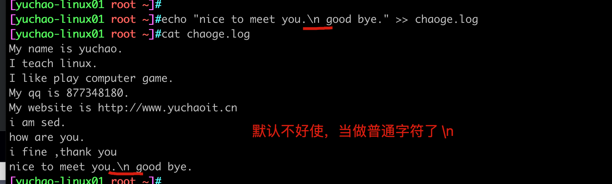
echo -e 参数
-e 允许对下面列出的加反斜线转义的字符进行解释.
\\
反斜线
\a
报警符(BEL)
\b
退格符
\c
禁止尾随的换行符
\f
换页符
\n
换行符
\r
回车符
\t
水平制表符
\v
纵向制表符
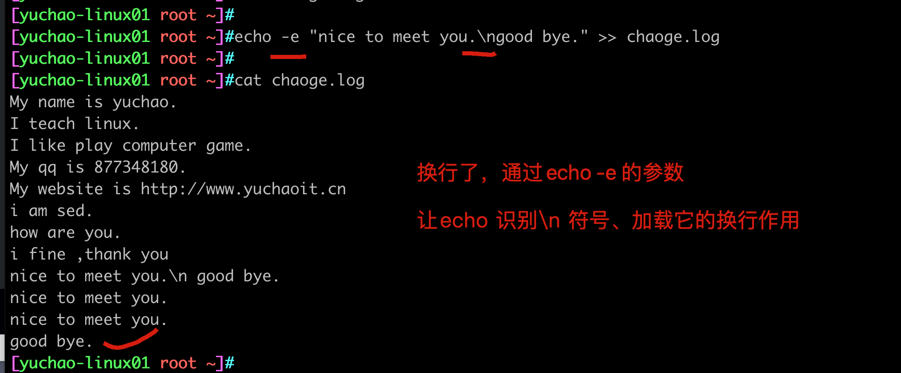
sed追加多行文本
无论是cat、还是echo，都只能往文件末尾追加内容。
而sed是按行处理文本，可以指定要处理的行，也就是在指定行插入字符数据。
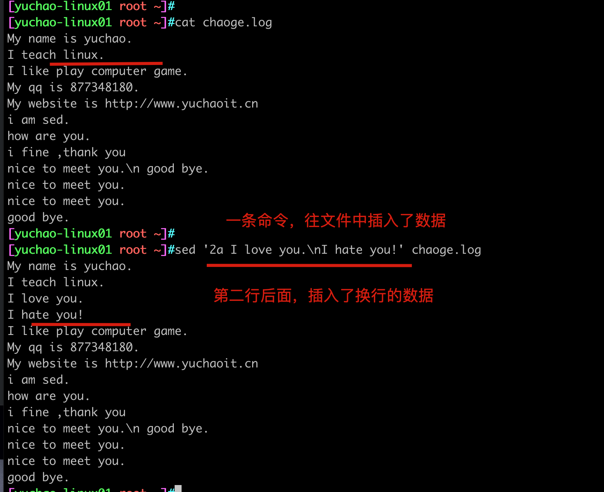
修改sshd_config实战
例如我们在系统初始化优化时，需要修改sshd服务端设置，需要加入如下多行配置
Port 25515 # 改端口
PermitRootLogin no # 不允许root登录
PerminEmptyPasswords no # 不允许空密码
UseDNS no # 不做主机名解析，加速ssh连接
GSSAPIAuthentication no # 不做主机名解析，加速ssh连接
备份sshd_config
修改配置之前先备份源文件
[yuchao-linux01 root ~]#cp /etc/ssh/sshd_config{,.origin}
[yuchao-linux01 root ~]#ls /etc/ssh/sshd_config*
/etc/ssh/sshd_config /etc/ssh/sshd_config.origin
等于 cp /etc/ssh/sshd_config /etc/ssh/sshd_config.origin
sed修改配置文件
sed '1i Port 25515\nPermitRootLogin no\nPerminEmptyPasswords no\nUseDNS no\nGSSAPIAuthentication no' chaoge.log
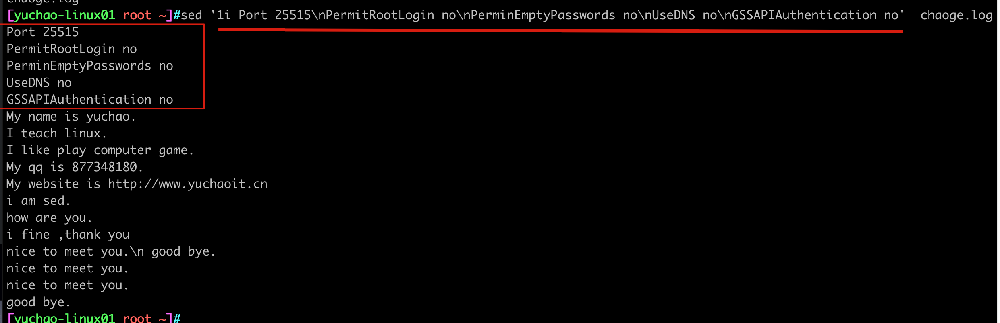
sed删除字符数据
我们以前是用vim编辑文本，也是通过d命令，剪切（删除）数据。
sed关于删除的命令
d 删除指定的行
d 命令，表示删除字符，delete意思
sed默认是多行处理所有文本，如果不指定范围，sed默认是删除所有文本行数据了
sed命令语法（记忆）
sed软件提供的命令很强大，刚开始到不用全部记住，以后逐步记忆即可，记住最常用的。
| sed命令语法 | 作用 |
|---|---|
| 3{sed-commands} | 操作第三行 |
| 3,6{sed-commands} | 操作3~6行，包括3和6行 |
| 3,+5{sed-commands} | 操作3到3+5(8)行，包括3,8行 |
| 1~2{sed-commands} | 步长为2，操作1,3,5,7..行 |
| 3,${sed-commands} | 对3到末尾行操作，包括3行 |
| /yuchao/{sed-commands} | 对匹配字符yuchao的喊该操作 |
| /yuchao/,/chaoge/{sed-commands} | 对匹配字符yuchao到chaoge的行操作 |
| /yuchao/,${sed-commands} | 对匹配字符yuchao到结尾的行操作 |
| /yuchao/,+2{sed-commands} | '/yuchao/,+2p'，打印匹配到yuchao的行，包括其后2行 |
sed删除命令练习
源数据
[yuchao-linux01 root ~]#cat chaoge.log
My name is yuchao.
I teach linux.
I like play computer game.
My qq is 877348180.
My website is http://www.yuchaoit.cn
删除文件所有行
sed不指定行号的话，默认匹配所有行，执行d删除命令
sed '行号 d命令' 文件
删除文件第2行
[yuchao-linux01 root ~]#sed '2 d' chaoge.log
My name is yuchao.
I like play computer game.
My qq is 877348180.
My website is http://www.yuchaoit.cn
删除1到3行
[yuchao-linux01 root ~]#sed '1,3d' chaoge.log
My qq is 877348180.
My website is http://www.yuchaoit.cn
删除第1、2、4行
语法是用分号，隔开多个命令
[yuchao-linux01 root ~]#sed '1d;2d;4d' chaoge.log
I like play computer game.
My website is http://www.yuchaoit.cn
正则与sed删除
如果要精确匹配，你依然写下精准的字符，也是不错的选择
删除game的行
[yuchao-linux01 root ~]#sed '/game/d' chaoge.log
My name is yuchao.
I teach linux.
My qq is 877348180.
My website is http://www.yuchaoit.cn
正则删除game的行
如何匹配game字符，可以是g.*e
[yuchao-linux01 root ~]#sed '/g.*e/d' chaoge.log
My name is yuchao.
I teach linux.
My qq is 877348180.
My website is http://www.yuchaoit.cn
删除game和http的行
也就是删除了2个指定的行
语法是
[yuchao-linux01 root ~]#sed '/g.*e/d;/ht*p/d' chaoge.log
My name is yuchao.
I teach linux.
My qq is 877348180.
删除game到http的行
[yuchao-linux01 root ~]#sed '/g.*e/,/ht*p/d' chaoge.log
My name is yuchao.
I teach linux.
删除第二行到qq的行
[yuchao-linux01 root ~]#sed '2,/qq/d' chaoge.log
My name is yuchao.
My website is http://www.yuchaoit.cn
删除2和5两行
[yuchao-linux01 root ~]#sed '2d;5d' chaoge.log
My name is yuchao.
I like play computer game.
My qq is 877348180.
删除2到5行
[yuchao-linux01 root ~]#sed '2,5d' chaoge.log
My name is yuchao.
删除3到尾行
[yuchao-linux01 root ~]#sed '3,$d' chaoge.log
My name is yuchao.
I teach linux.
删除偶数行（步长）
[yuchao-linux01 root ~]#seq 10 | sed '2~2d'
1
3
5
7
9
删除奇数行（步长）
[yuchao-linux01 root ~]#seq 10 | sed '1~2d'
2
4
6
8
10
感叹号取反
感叹号在很多命令里都是取反的作用，sed也一样
除了有字符yuchao的行，其他都删除
[yuchao-linux01 root ~]#sed '/yuchao/!d' chaoge.log
My name is yuchao.
My website is http://www.yuchaoit.cn
总结
工作里用的最多的还是指定数字行号，或者完整字符精确匹配，不容易出错。
而正则或是其他模糊匹配，很容易改错，了解即可。
sed修改数据
修改数据，是一大重点，因为我们需要用sed来修改各种配置文件，sed这种非交互式修改文件内容，在脚本中实现自动化修改是最常见的。
如修改nginx的端口；
修改mysql的数据存储路径；
替换整行命令（c）
c\\ 把选定的行改为新的文本。
实践
[yuchao-linux01 root ~]#sed '2c I teach linux,python!' chaoge.log
My name is yuchao.
I teach linux,python!
I like play computer game.
My qq is 877348180.
My website is http://www.yuchaoit.cn
替换字符（s）
这个功能占用了sed使用率的80%，基本替换的功能都是这个s指令。
sed替换的命令解释
sed 's/替换前字符/替换后字符/g' file
s 将每一行第一处匹配的字符替换 s/old_string/new_string/
g 全局替换global，每一行，每一处匹配的字符都替换 s/old_string/new_string/
-i 选项、参数，直接修改文件
sed默认是修改内存中的模式空间数据，不会修改源文件，使用-i会修改源文件，修改磁盘上的文件数据。
sed命令s的替换语法
关于s替换的语法，如下都可以
sed 's/old_string/new_string/g' file.log
sed 's@old_string@new_string@g' file.log
建议用这个#号，作为分隔符，因为其他符号也经常用到，例如 / ，否则你就得写转义符，你得疯掉
sed 's#old_string#new_string#g' file.log
例如如下恶心的写法
's\//opt/data/\//opt/new_data/\/g'
改为这样，是不是舒服多了？
's#/opt/data/#/opt/new_data/#g'
这个# 称作边界符
yuchao 改为 老于
测试数据
[yuchao-linux01 root ~]#cat chaoge.log
My name is yuchao. you can call me yuchao.
I teach linux.
I like play computer game.
My qq is 877348180.
My website is http://www.yuchaoit.cn , and another website is https://www.yuchao.top/
[yuchao-linux01 root ~]#
不加g替换一次
[yuchao-linux01 root ~]#sed 's#yuchao#老于#' chaoge.log
My name is 老于. you can call me yuchao.
I teach linux.
I like play computer game.
My qq is 877348180.
My website is http://www.老于it.cn , and another website is https://www.yuchao.top/
加上g，全局替换
[yuchao-linux01 root ~]#sed 's#yuchao#老于#g' chaoge.log
My name is 老于. you can call me 老于.
I teach linux.
I like play computer game.
My qq is 877348180.
My website is http://www.老于it.cn , and another website is https://www.老于.top/
加上-i参数，让修改动作生效。
[yuchao-linux01 root ~]#sed -i 's#yuchao#老于#g' chaoge.log
指定行号修改
[yuchao-linux01 root ~]#sed '3s#computer#电脑#g' chaoge.log
My name is yuchao. you can call me yuchao.
I teach linux.
I like play 电脑 game.
My qq is 877348180.
My website is http://www.yuchaoit.cn , and another website is https://www.yuchao.top/
所有的my替换为His
sed忽略大小写
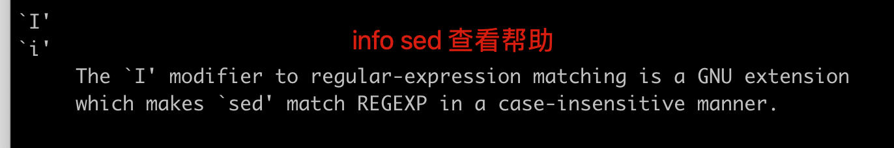
替换方法1，精确匹配字符
[yuchao-linux01 root ~]#sed 's#My#his#g' chaoge.log
his name is yuchao. you can call me yuchao.
I teach linux.
I like play computer game.
his qq is 877348180.
his website is http://www.yuchaoit.cn , and another website is https://www.yuchao.top/
替换方法2，忽略大小写
[yuchao-linux01 root ~]#sed 's#my#his#gi' chaoge.log
his name is yuchao. you can call me yuchao.
I teach linux.
I like play computer game.
his qq is 877348180.
his website is http://www.yuchaoit.cn , and another website is https://www.yuchao.top/
sed读取变量（替换数据）
有时候脚本中sed替换的数据，并非是我们人为写死的数据，可以是从变量中读取数据。
注意，别忘了
单引号是所见即所得
双引号可以加载变量
默认无引号，无法解析变量
[yuchao-linux01 root ~]#sed 's#yuchao#$name#g' chaoge.log
My name is $name. you can call me $name.
I teach linux.
I like play computer game.
My qq is 877348180.
My website is http://www.$nameit.cn , and another website is https://www.$name.top/
单引号情况（知道即可）
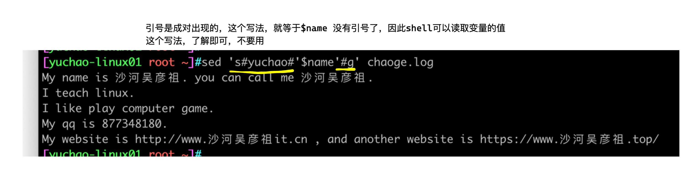
双引号（用这个）
sed分组替换
语法：
sed软件也提供了 \(\)分组功能
使用\1引用第一个括号的数据
\2引用第二个括号的数据
sed最多记住9个分组
测试数据
echo 'I am teacher yuchao,welcome my linux course'
仅保留yuchao字符串
[root@yuchao-tx-server ~]# echo 'I am teacher yuchao,welcome my linux course' |sed 's#^.*er \([a-z].*\)\,.*#\1#g'
yuchao
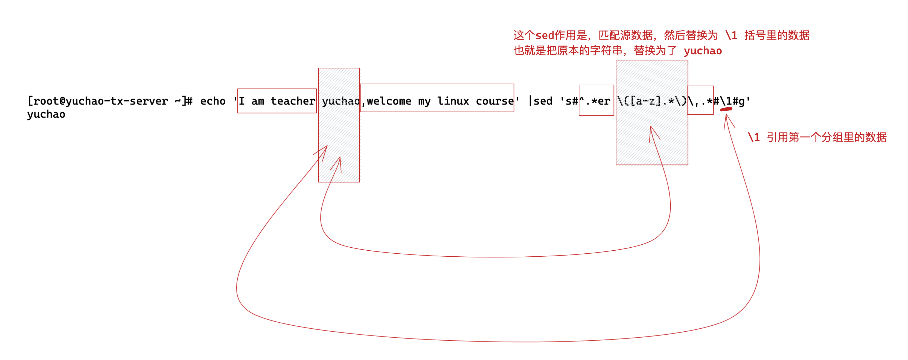
sed与扩展正则
关于正则：
()是扩展正则表达式中的元字符，sed软件默认也只识别基本正则表达式，想要使用扩展正则，需要用\转义，也就是\(\)
或者使用sed -r参数，识别扩展正则 ，二选一
转义符与扩展正则
echo 'I am teacher yuchao,welcome my linux course' |sed 's#^.*er \([a-z].*\)\,.*#\1#g'
sed -r参数
echo 'I am teacher yuchao,welcome my linux course' |sed -r 's#^.*er ([a-z].*)\,.*#\1#g'
关于正则的理解
正则不是万能钥匙，只有在你掌握了元字符的含义后，活学活用，通过组合正确的元字符，来处理其他任意变化的字符数据。
分组取出ip
\s 表示单个空格
[root@yuanlai-school ~]# ifconfig eth0 | sed -rn '2s#^.*inet\s(.*)net.*#\1#p'
172.19.19.95
去头去尾法
-e 多次编辑，写入多次sed命令
[root@yuanlai-school ~]# ifconfig eth0 | sed -ne '2s#^.*inet\s##' -e '2s#net.*##p'
172.19.19.95
sed查询
sed的修改，删除最重要的学完了
接下来看看sed的查询，也是比较实用的，比起cat、more要方便的多。
sed打印命令p 打印sed正则处理后的数据
并且sed默认打印模式空间，可以用-n取消
固定用法，只要实用p，就是想输出指定数据，必然用-n取消默认打印
打印指定行
[root@yuchao-tx-server ~]# sed '2p' chaoge.log -n
I teach linux.
打印指定范围行
[root@yuchao-tx-server ~]# sed '1,4p' chaoge.log -n
My name is yuchao.
I teach linux.
I like play computer game.
My qq is 877348180.
过滤字符串打印
打印qq那一行
[root@yuchao-tx-server ~]# sed '/qq/p' chaoge.log -n
My qq is 877348180.
指定行到指定字符串区间
了解即可，不要使用，因为如果没匹配到/http/字符，依然会向后打印
[root@yuchao-tx-server ~]# sed '3,/http/p' chaoge.log -n
I like play computer game.
My qq is 877348180.
My website is http://www.yuchaoit.cn
匹配多个字符
注意语法
找出http或linux的行
注意扩展正则 或符号，需要用-r参数
[root@yuchao-tx-server ~]# sed -r '/linux|http/p' chaoge.log -n
I teach linux.
My website is http://www.yuchaoit.cn
找出http到linux的行
这种方式依然不推荐，不能精准找到我们想要的数据行，
[root@yuchao-tx-server ~]# sed '/linux/,/http/p' chaoge.log -n
I teach linux.
I like play computer game.
My qq is 877348180.
My website is http://www.yuchaoit.cn
sed其他命令
w命令
作用是将sed操作结果，写入到指定文件中
[root@yuchao-tx-server ~]# sed '/linux/w linux.log' chaoge.log -n
[root@yuchao-tx-server ~]#
[root@yuchao-tx-server ~]# cat linux.log
I teach linux.
替换文件中所有的yuchao为老于，新内容写入到yu.log
[root@yuchao-tx-server ~]# sed 's#yuchao#老于#gw yu.log' chaoge.log -n
[root@yuchao-tx-server ~]#
[root@yuchao-tx-server ~]#
[root@yuchao-tx-server ~]# ls
chaoge.log linux.log yu.log
[root@yuchao-tx-server ~]# cat yu.log
My name is 老于.
My website is http://www.老于it.cn
i命令忽略大小写
替换文件中所有My为his，忽略大小写
[root@yuchao-tx-server ~]# sed 's#my#his#igp' chaoge.log -n
his name is yuchao.
his qq is 877348180.
his website is http://www.yuchaoit.cn
= 获取行号
sed中使用特舒符号= 可以获取文件的行号，但是并不好用，和源文件数据不在一行。
[root@yuchao-tx-server ~]# sed '=' chaoge.log -n
1
2
3
4
5
[root@yuchao-tx-server ~]#
[root@yuchao-tx-server ~]# sed '=' chaoge.log
1
My name is yuchao.
2
I teach linux.
3
I like play computer game.
4
My qq is 877348180.
5
My website is http://www.yuchaoit.cn
查看包含了www字符在哪一行
[root@yuchao-tx-server ~]#
[root@yuchao-tx-server ~]# sed '/www/=' chaoge.log
My name is yuchao.
I teach linux.
I like play computer game.
My qq is 877348180.
5
My website is http://www.yuchaoit.cn
取消默认输出
[root@yuchao-tx-server ~]# sed '/www/=' chaoge.log -n
5
指定行号显示其行号
（可以用于获取文件行数）
[root@yuchao-tx-server ~]# sed '3=' chaoge.log -n
3
用$=表示文件的末行，统计文件行数
[root@yuchao-tx-server ~]# sed '$=' chaoge.log -n
5
sed其他选项
-e选项
-e选项用于接上sed多个命令
[root@yuchao-tx-server ~]# sed -e '4,$d' chaoge.log -e 's#I#you#g'
My name is yuchao.
you teach linux.
you like play computer game.
; 分号
分号也用于执行多条命令，和linux基础命令一样支持这种写法。
[242-yuchao-class01 root ~]#sed '3,$d;s#I#我#g' chaoge.log
My name is yuchao. you can call me yuchao.
我 teach linux.
-f 指定文件
sed也支持把命令写入到文件里，再通过-f参数去调用
例如
基本的sed用法
[242-yuchao-class01 root ~]#sed 's#I#我#g' chaoge.log
My name is yuchao. you can call me yuchao.
我 teach linux.
我 like play computer game.
My qq is 877348180.
My website is http://www.yuchaoit.cn , and another website is https://www.yuchao.top/
sed命令写入到文件里，注意语法
[242-yuchao-class01 root ~]#cat test1.sed
s#I#我#g
[242-yuchao-class01 root ~]#
[242-yuchao-class01 root ~]#
[242-yuchao-class01 root ~]#sed -f test1.sed chaoge.log
My name is yuchao. you can call me yuchao.
我 teach linux.
我 like play computer game.
My qq is 877348180.
My website is http://www.yuchaoit.cn , and another website is https://www.yuchao.top/
l 命令
小写的 l 命令
作用是显示字文本不可见的字符，也就是每一行结尾的$符
用法
[242-yuchao-class01 root ~]#sed 'l' chaoge.log -n
My name is yuchao. you can call me yuchao.$
I teach linux.$
I like play computer game.$
My qq is 877348180.$
My website is http://www.yuchaoit.cn , and another website is https:/\
/www.yuchao.top/$
这个sed命令，作用类似于cat -E
cat -E 参数作用
-E, --show-ends
display $ at end of each line
[242-yuchao-class01 root ~]#cat -E chaoge.log
My name is yuchao. you can call me yuchao.$
I teach linux.$
I like play computer game.$
My qq is 877348180.$
My website is http://www.yuchaoit.cn , and another website is https://www.yuchao.top/$
q 命令
这是sed的q终止命令；
sed工作流程是
- 读取数据
- 执行sed命令
- 打印结果
- 重复循环
因此遇见q命令就结束sed执行
[242-yuchao-class01 root ~]#sed '3q' chaoge.log
My name is yuchao. you can call me yuchao.
I teach linux.
I like play computer game.
特殊用法，q命令截取文件内容
使用q命令，实现head命令的作用，提取文件前几行数据
head用法，提取文件前3行
[242-yuchao-class01 root ~]#head -3 chaoge.log > h3.log
[242-yuchao-class01 root ~]#cat h3.log
My name is yuchao. you can call me yuchao.
I teach linux.
I like play computer game.
sed命令q用法，一样实现截图前3行
[242-yuchao-class01 root ~]#sed '3q' chaoge.log > sed3.log
[242-yuchao-class01 root ~]#cat sed3.log
My name is yuchao. you can call me yuchao.
I teach linux.
I like play computer game.
单独提取1,2,4行
sed基本命令都是范围取值，不连续的行，得通过多次执行sed命令实现
分号实现
[242-yuchao-class01 root ~]#sed '1p;2p;4p' chaoge.log -n
My name is yuchao. you can call me yuchao.
I teach linux.
My qq is 877348180.
-e参数实现
[242-yuchao-class01 root ~]#sed -e '1p' chaoge.log -e '2p' -e '4p' -n
My name is yuchao. you can call me yuchao.
I teach linux.
My qq is 877348180.